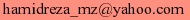

| بازگشت | ||
| مقالات ترجمه شده در ارتباط با نرم افزار آزاد: | ||
| ۱ | آزادی ـ یا کپیرایت؟ | |
| ۲ | سخنرانی ریچارد استالمن در کلکته | |
| ۳ | آیندهٔ نرمافزار آزاد (سخنرانی در ژاپن) | |
| ۴ | چه چیزی درون یک نام نهفته است؟ | |
| ۵ | آیا شما میتوانید به رایانهٔ خود اعتماد کنید؟ | |
| ۶ | That's fighting talk (ترجمه شده) | |
| ۷ | مخالفت با سوء مدیریت حقوق دیجیتال | |
| ۸ | «پیشرفت» علم رایانه: خوب و بد | |
| ۹ | پتنتها یک چرند اقتصادیاند. | |
| ۱۰ | آیا مایکروسافت شیطان بزرگ است؟ | |
| ۱۱ | چرا فرمت صوتی اهمیت دارد | |
| ۱۲ | ما میتوانیم یک پایان بر پیوستهای Word قرار دهیم | |
| ۱۳ | آزادی یا قدرت؟ | |
| ۱۴ | GNU GPL و رویای آمریکایی | |
| ۱۵ | GNU GPL و روش آمریکایی | |
| ۱۶ | فهم اشتباه از کپیرایت | |
| ۱۷ | تصرف داریی فکری - نبرد عصر اطلاعات | |
| توضیح: ترتیب مقالات در لیست بالا معنای خاصی ندارد. ترجمه و تهیه:  | ||